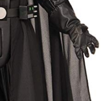
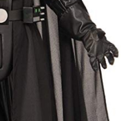

.png) 

Дарт Вейдер
0123238313
1500₽/сутки.
Комплектация:
Комбенизон, шлем, плащ, жилет
Размер:
48-52
В наличии: 1
Описание
Дарт Ве́йдер, также известный под своим настоящим именем как Э́накин Скайуо́кер — центральный персонаж первых шести эпизодов саги «Звёздные войны». Также появляется в фильме «Изгой-один». Персонаж придуман Джорджем Лукасом. По одной из версий, имя Энакин скопировано с фамилии друга Лукаса — режиссёра Кена Эннакина[3], однако сам Лукас это опроверг на следующий же день после смерти Кена[4]. Многие Лорды Ситхов добавляли приставку «Дарт» к своим именам, и постепенно из-за количества «Дартов» она стала ассоциироваться с тёмной стороной Силы. Также эта приставка бралась как символ отказа от прежней жизни. Примером этого служит и Энакин Скайуокер, ставший Дартом Вейдером. Однако, само происхождение слова до сих пор остаётся неопределённым: большинство считает, что «Дарт» (англ. Darth) — это просто сокращение от «Тёмный лорд ситхов» (англ. Dark Lord of the Sith), но существуют теории, предполагающие более глубокую интерпретацию.